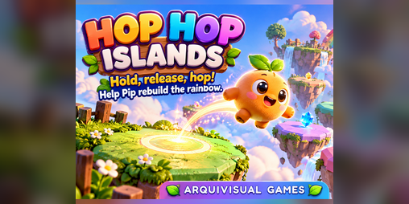

DisponibleArcade · Un toque
Hop Hop Islands
Mantené, soltá y saltá. Ayudá a Pip a cruzar las islas flotantes y reconstruir el Gran Arcoíris.
Una partida más
Descubrí Hop Hop Islands y las experiencias arcade del portal.
Una partida más
Un toque, un salto y una nueva oportunidad. Descubrí Hop Hop Islands.

DisponibleArcade · Un toque
Mantené, soltá y saltá. Ayudá a Pip a cruzar las islas flotantes y reconstruir el Gran Arcoíris.